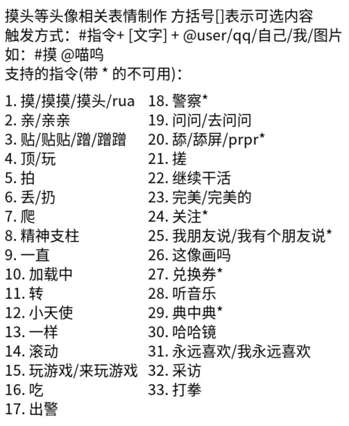
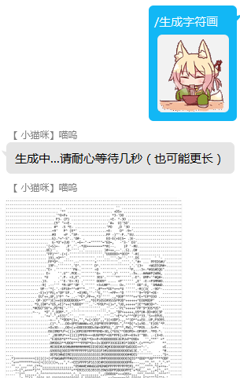
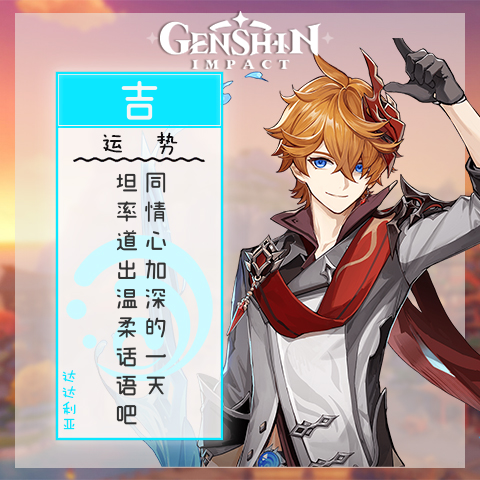
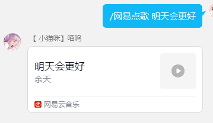
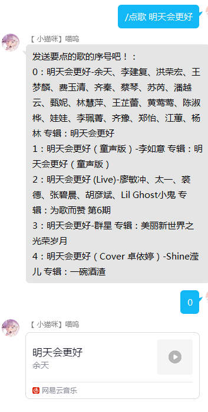

功能
包括一些 没有限制 / 部分群启用 / 仅某个人可用 的功能 以及暂停使用的功能（限制使用的会标明）
帮助
发送/功能或/help可以获取一点简短的帮助信息
反馈
如果有bug，或者需要什么功能但是联系不到主人时，可以发送#反馈 + 你的反馈信息向主人发送一条反馈信息
不可以故意发送骚扰信息！
早安/晚安
@喵呜 或 提及喵呜 时发送 早安/晚安 会根据时间问好(问坏x)
示例：
A : @喵呜 早
喵呜：@A 早上好呀！
图片/表情包合成
使用方法：命令 + 参数，命令需要命令头 # 或 /
如假设命令是 abcd，则使用方法为 /abcd 参数1 或 #abcd 参数1
目前支持的命令如下（分为头像表情包和图片合成）
-
头像表情包 (发送
/头像表情包可以获取帮助信息)此系列还有
膜，炖,教我写代码
用法示例（以
摸为例）：用户：
#摸 @XXX（也可以是/摸 @xxx，#摸 1234567，#摸 [图片]，前缀#或/无所谓，任选）喵呜：
-
图片合成
命令：
生成字符画
参数：一张图片
示例：

答案之书
不知道如何选择的时候，问问答案之书吧！
使用方法：发送答案之书即可
今日运势
查看你今天的运势
使用方法: @喵呜发送运势即可
- 示例：
A : @喵呜 运势
喵呜：@A 今日运势

AI闲聊
@喵呜可进行对话，但是比较智障，答非所问
使用的是腾讯NLP接口
点歌
点播歌曲
为命令形式，需要命令头 # 或 /
使用方法
-
命令1：
QQ点歌或网易点歌
参数：歌名
直接发送对应平台的歌曲分享
Tip: 可以在歌名中包含歌手名字以指定歌手，如/网易点歌 心拍数#0822 鹿乃示例：
 -
命令2：
点歌
参数：歌名
使用网易云音乐平台，会提供多个搜索歌曲结果用于选择，操作较繁琐，但更容易找到想要的歌
示例：

查疫情
查询某地疫情
为命令形式，需要命令头 # 或 /
命令：疫情
参数：地区（中国，省，市）
示例：
A发送： /疫情 北京
喵呜发送：
北京 疫情数据：
目前：
风险情况：无法获取
确诊人数：25(+0)
-----------------
累计数据：
确诊人数：3702
治愈人数：3668
死亡人数：9
更新时间：2022-07-08 11:35:22
每日新闻60s
发送每日新闻
使用方法：
发送 /看世界 即可
会发送一张这样的图

哪个群友是我老婆
随机抽取一位群友（或多位群友）成为你的老婆
-
用法：
发送抽老婆或哪个群友是我老婆或谁是我老婆会随机抽取一位群友成为你的老婆
发送老婆n连可以抽取多个，n是具体数字（阿拉伯数字或汉字）， -
示例：
群友A：抽老婆
喵呜 ：@群友A 今天你的群老婆是 ...群友B：老婆五连
喵呜：群友Bの后宫 ...（转发消息形式） -
Q群管家和自己不会被抽到，一次抽取超过三个会有 0.2 概率啥也没有，并且计算冷却
AV/BV解析
对发送的AV/BV号，视频链接，哔哩卡片消息进行解析，并发送解析后的 视频链接和视频简介等
默认关闭状态，需要手动开启，开启的命令需要 @喵呜 才可
开启or关闭命令：开启哔哩解析，关闭哔哩解析
示例：
@喵呜 /开启哔哩解析 （斜杠不要漏）
@喵呜 /关闭哔哩解析
----------------------
群聊管理
！此功能需要喵呜是管理员或群主
主要是一些 禁言相关，头衔设置，违禁词相关的命令，需要命令头 /或#
-
禁言相关
命令：禁言，解禁，全体禁言，全体解禁，求禁言,禁言我
参数：@xx [时间]
禁言需要 @群员 并给出禁言时间（按分钟计）, 否则默认 1 分钟
解禁只需 @ 要解禁的群员
求禁言和禁言我只需给出禁言时间，否则随机 1-10 分钟，最多禁言 12 小时
除了自己禁言自己，其他需要管理员才能使用示例：
/禁言 @A 10（禁言 A 10分钟）
/解禁 @A（解除 A 的禁言）
/全体禁言（开启全员禁言）
/全体解禁（关闭全员禁言）
/求禁言 6//禁言我 6（禁言自己 6 分钟） -
头衔设置
该命令需要喵呜为群主才可生效-
命令1：
申请头衔
参数：头衔名称
任何人均可用于自己申请自己的头衔 -
命令2：
设置头衔
参数：@xx 头衔名称
管理员可用，为群员 xx 设置头衔
示例：
/申请头衔 喵（为自己申请头衔 喵）
/设置头衔 @A 喵（设置 A 的头衔为 喵） -
-
违禁词相关
触发违禁词时喵呜会撤回触发的消息，并可能禁言触发者，添加/删除违禁词需要管理员才能进行-
命令1：
添加违禁词
参数：违禁词 禁言时间
添加一条违禁词，并设置触发时的禁言时间，若禁言时间小于等于 0 则表示只撤回不禁言 -
命令2：
删除违禁词
参数：已添加的违禁词
删除一条违禁词 -
命令3：
删除全部违禁词删除该群所有违禁词
示例：
/添加违禁词 艹 3（添加违禁词艹，触发时撤回消息并禁言 3 分钟）
/删除违禁词 艹（删除违禁词艹）
/添加违禁词 艹 0（添加违禁词艹，触发时只撤回触发的消息，不禁言）
/删除全部违禁词（删除本群所有的违禁词） -
-
其他
命令：sleep
助眠，发送/sleep会禁言一定时间，让你安心睡觉别水群了（x）
撤回消息
若喵呜发送了什么不合适的话（由于接口返回结果不确定或是其他什么不确定因素导致的），可撤回喵呜发送的消息
管理员以上权限可用
命令：撤回消息
参数：消息索引（即从下往上数第n条消息，从0开始计）
示例：
喵呜：消息1
喵呜；消息2
喵呜：消息3
管理员A: /撤回消息 0 （此时会撤回 消息3 ）
Bot开关
需要管理员权限
控制喵呜在自己群的启用状态，不过关闭时可能会存在 关了，但没完全关 的情况（
启用方法：@喵呜 /启用
禁用方法：@喵呜 /禁用 （禁用后将不会回复群里的消息）
来份涩图
只在部分群开启，要开启需要申请，可以用反馈功能进行申请
功能：发送随机二次元图
触发方式：发送二次元，来份涩图，壁纸 即可
问答
即关键词回复，可以自己添加/删除词条
仅白名单成员可以自由添加删除，其他需要审核通过才能生效
添加词条：问A答B （A是触发的关键词，B是回复语）
删除词条：/删除词条 A （删除关键词 A）
示例：
问你好答你好呀！ （审核通过后发送`你好`，喵呜会回复`你好呀！`）
/删除词条 你好 （删除`你好`词条，后续再发送不会触发回复）
----其他杂七杂八的功能----
取头像
获取某个群友头像
用法：/取头像 @A （获取A的头像）
原神相关
喵呜还有一些原神相关的功能，如查询玩家信息，深渊信息，角色攻略，武器信息，角色语音等
发送 /原神帮助 可以获得相关帮助
----被动----
好感度
主要用于自我保护，检测攻击性话语等用的，计算的好感其实不是很准。
喵呜会对你说的话进行情感分析，根据正负情况计算好感。
为正会加好感，为负时会检测负面关键词决定是否进行减好感。
好感值过低会对你历史说过的话进行审查，确认有攻击性的话语等会进行拉黑处理。
好感等级分为 10 级，等级为 0 说明好感可能为负或小于 70
好感仅仅是用于辅助判断，绝对不会影响其他功能使用权限，
好感高低不会有特别对待，不要刻意刷好感，
好感度低也不用担心，只要没有对喵呜说过攻击性的话，一般是不会拉黑的，
正常使用就好，如果不喜欢机器人可以屏蔽掉，还请不要随便骂。
可以使用 /查看好感 来查看自己的好感等级
黑名单
黑名单会记录一些对机器人不友好的人，对于黑名单成员，喵呜不会回复他们的任何消息。
违禁词检测
喵呜会检测向喵呜发送的消息中的违禁词，若有违禁词则可能会禁言触发者， 并且会拉黑10分钟以及转告主人，会视情况决定是否永久拉黑，但是误触发不会被永久拉黑
防刷屏
发消息过快时（一定时间内发送超过一定条数消息），喵呜会不理刷屏者 30s ，主要用于防止机器人之间互相刷屏
被禁言后行为
喵呜被禁言超过七天会通知主人，并可能会退群
被禁言超过半小时会通知主人，并临时拉黑被禁言的群一天（即不回复被禁言的群里的消息，即便已经解禁）
复读机
随机复读群友之前发的一句话
还需要更多功能可以使用反馈功能提意见，会考虑是否增加所提的内容以丰富喵呜的功能（能力范围内）
由于一些功能的风险性，还有一些功能并没有列出，目前这些功能仅限自己用，后续也许会考虑开放（不过概率比较低。太懒了）。